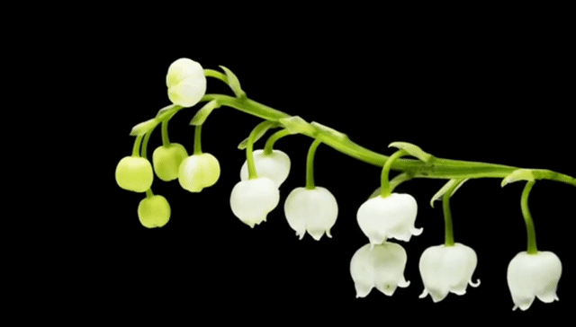
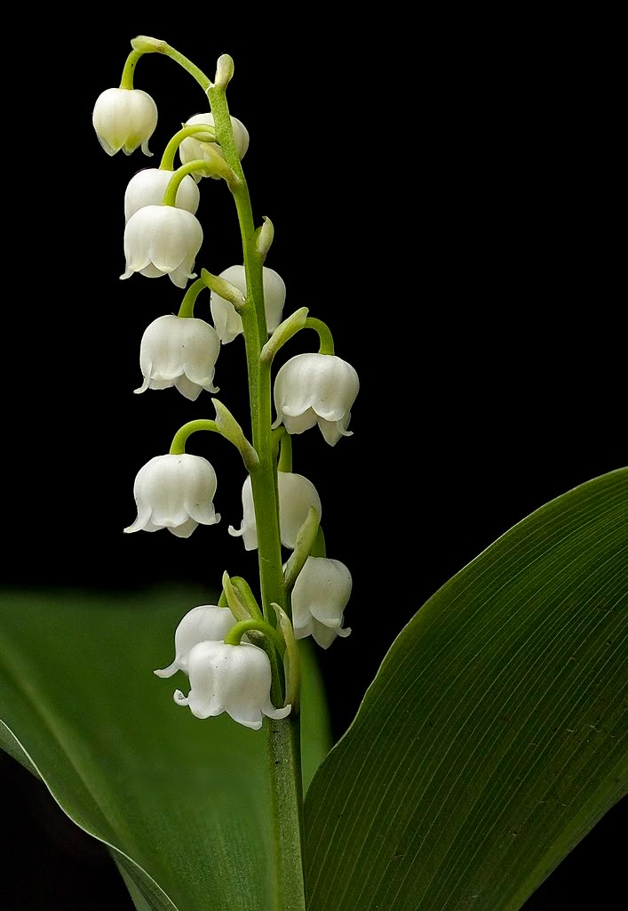
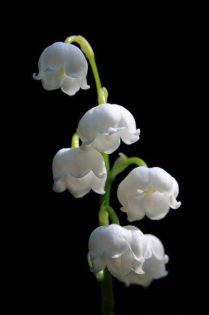
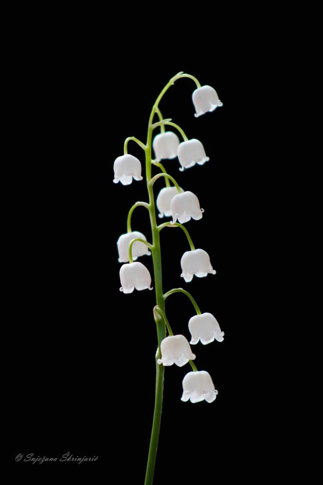

Convalllaria majalis (aka. Lily of the valley) is a delicate and fragrant flower known for its tiny, bell-shaped white blooms that nod gracefully along slender green stems. Often found in shaded woodlands and cottage gardens, it symbolizes purity, sweetness, and the return of happiness. Despite its gentle appearance, the plant is surprisingly hardy and spreads quickly once established. Blooming in late spring, its enchanting scent has made it a popular choice for perfumes and bridal bouquets. However, it's important to note that all parts of the plant are highly toxic if ingested.


